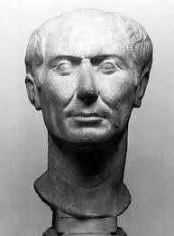

Gaius Julius Caesar[a] (/ˈsiːzər/ SEE-zər, Latin: [ˈɡaːɪ.ʊs ˈjuːlɪ.ʊs ˈkae̯sar]; 12 July 100 BC[b] – 15 March 44 BC),[c] better known by his nomen gentilicium and cognomen Julius Caesar, was a Roman statesman and military general who played a critical role in the events that led to the demise of the Roman Republic and the rise of the Roman Empire. He was also a historian and author of Latin prose.
In 60 BC, Caesar, Crassus and Pompey formed the First Triumvirate, a political alliance that dominated Roman politics for several years. Their attempts to amass power as Populares were opposed by the Optimates within the Roman Senate, among them Cato the Younger with the frequent support of Cicero. Caesar rose to become one of the most powerful politicians in the Roman Republic through a number of his accomplishments, notably his victories in the Gallic Wars, completed by 51 BC. During this time, Caesar became the first Roman general to cross both the English Channel and the Rhine River, when he built a bridge across the Rhine and crossed the Channel to invade Britain. Caesar's wars extended Rome's territory to Britain and past Gaul. These achievements granted him unmatched military power and threatened to eclipse the standing of Pompey, who had realigned himself with the Senate after the death of Crassus in 53 BC. With the Gallic Wars concluded, the Senate ordered Caesar to step down from his military command and return to Rome. Leaving his command in Gaul meant losing his immunity from being charged as a criminal for waging unsanctioned wars. As a result, Caesar found himself with no other options but to cross the Rubicon with the 13th Legion in 49 BC, leaving his province and illegally entering Roman Italy under arms.[3] This began Caesar's civil war, and his victory in the war by 45 BC put him in an unrivaled position of power and influence.Gaius Julius Caesar was born into a patrician family, the gens Julia, which claimed descent from Julus, son of the legendary Trojan prince Aeneas, supposedly the son of the goddess Venus.[7] The Julii were of Alban origin, mentioned as one of the leading Alban houses, which settled in Rome around the mid-7th century BC, following the destruction of Alba Longa. They were granted patrician status, along with other noble Alban families.[8] The Julii also existed at an early period at Bovillae, evidenced by a very ancient inscription on an altar in the theatre of that town, which speaks of their offering sacrifices according to the lege Albana, or Alban rites.[9][10][11] The cognomen "Caesar" originated, according to Pliny the Elder, with an ancestor who was born by Caesarean section (from the Latin verb to cut, caedere, caes-).[12] The Historia Augusta suggests three alternative explanations: that the first Caesar had a thick head of hair (Latin caesaries); that he had bright grey eyes (Latin oculis caesiis); or that he killed an elephant during the Punic Wars (caesai in Moorish) in battle.[13] Caesar issued coins featuring images of elephants, suggesting that he favored the latter interpretation of his name.
Despite their ancient pedigree, the Julii Caesares were not especially politically influential, although they had enjoyed some revival of their political fortunes in the early 1st century BC.[14] Caesar's father, also called Gaius Julius Caesar, governed the province of Asia,[15] and his sister Julia, Caesar's aunt, married Gaius Marius, one of the most prominent figures in the Republic.[16] His mother, Aurelia Cotta, came from an influential family. Little is recorded of Caesar's childhood.[17]
In 85 BC, Caesar's father died suddenly,[18] so Caesar was the head of the family at 16. His coming of age coincided with a civil war between his uncle Gaius Marius and his rival Lucius Cornelius Sulla. Both sides carried out bloody purges of their political opponents whenever they were in the ascendancy. Marius and his ally Lucius Cornelius Cinna were in control of the city when Caesar was nominated as the new Flamen Dialis (high priest of Jupiter),[19] and he was married to Cinna's daughter Cornelia.[20][21]
Following Sulla's final victory, though, Caesar's connections to the old regime made him a target for the new one. He was stripped of his inheritance, his wife's dowry, and his priesthood, but he refused to divorce Cornelia and was forced to go into hiding.[22] The threat against him was lifted by the intervention of his mother's family, which included supporters of Sulla, and the Vestal Virgins. Sulla gave in reluctantly and is said to have declared that he saw many a Marius in Caesar.[17] The loss of his priesthood had allowed him to pursue a military career, as the high priest of Jupiter was not permitted to touch a horse, sleep three nights outside his own bed or one night outside Rome, or look upon an army.[23]
Caesar felt that it would be much safer far away from Sulla should the Dictator change his mind, so he left Rome and joined the army, serving under Marcus Minucius Thermus in Asia and Servilius Isauricus in Cilicia. He served with distinction, winning the Civic Crown for his part in the Siege of Mytilene. He went on a mission to Bithynia to secure the assistance of King Nicomedes's fleet, but he spent so long at Nicomedes' court that rumours arose of an affair with the king, which Caesar vehemently denied for the rest of his life.[24]